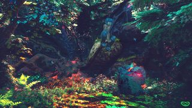
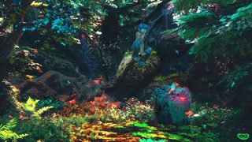

8.Rencontre avec l'oiseau-mouche
Plusieurs fichiers ou versions sont conservés ensemble.
Ouvrir l’imageFichiers conservés
colibri3


Informations du fichier
- Nom conservé
- colibri3-copie.jpg
- Taille
- 119,526 octets
- SHA-256
- fe7a55585691c1b4993300ec380f404b9dcc3a1e0bbcb7b01d1da67a9304c4a3
colibri3


Informations du fichier
- Nom conservé
- colibri3.jpg
- Taille
- 126,556 octets
- SHA-256
- 13b08468988b80bb22173d859e01e7060ee62c1f26a4187692c35b8dce867b8a